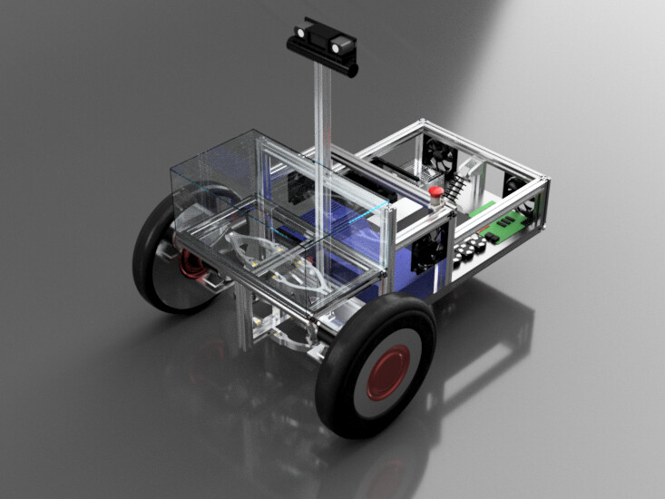
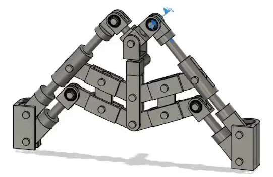
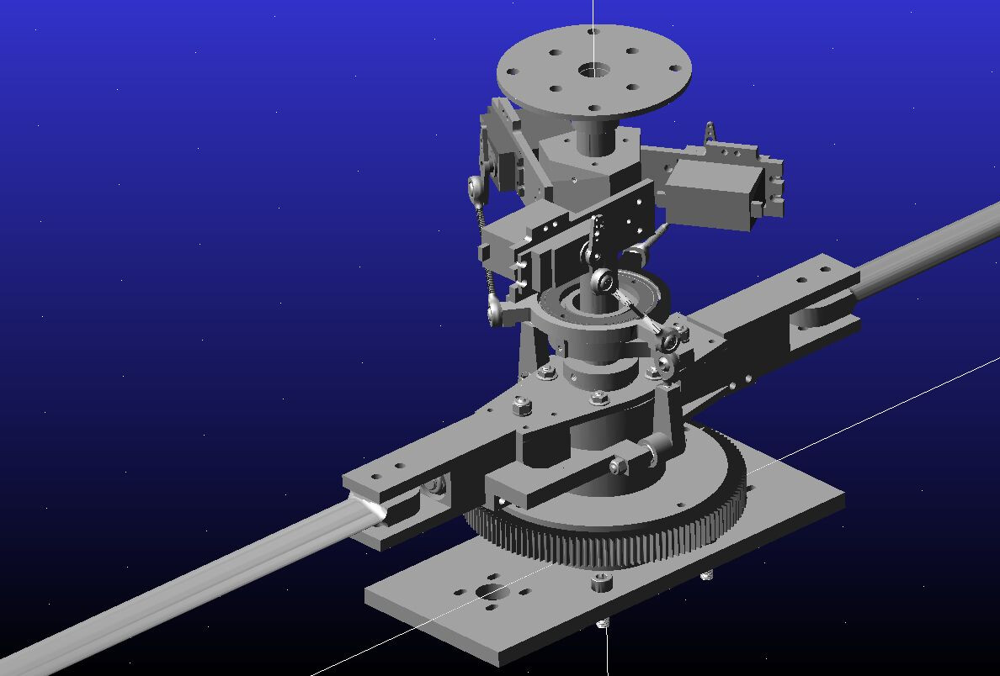
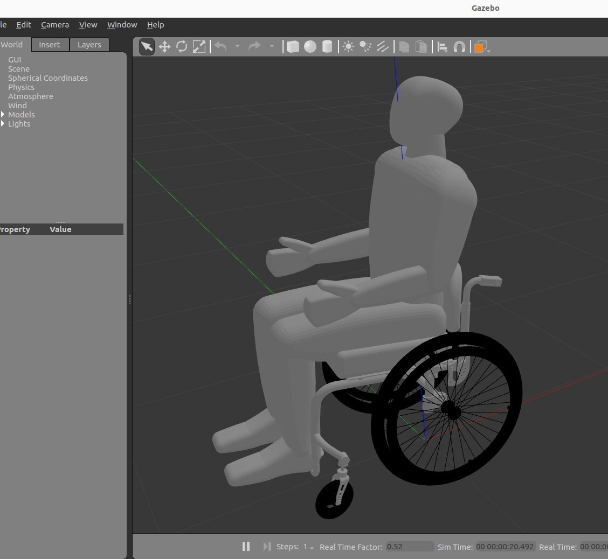
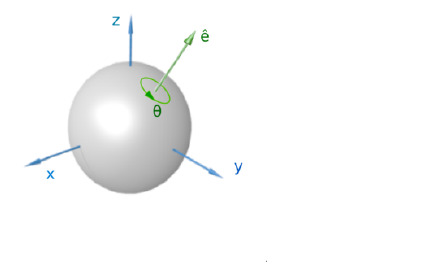
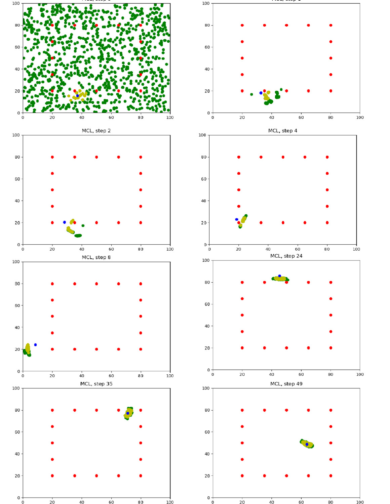
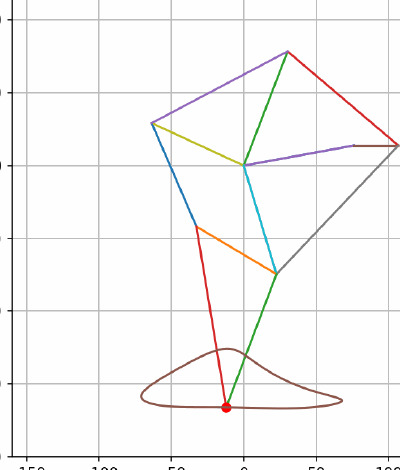

Passive-Legged Hopping Quadcopter
A 35 g quadcopter with spring-like passive legs that hops and flies. I built a hybrid stance–flight dynamics model and a predictive controller that stabilizes continuous hopping to 0.1 m RMSE.
I build and control machines that move — legged & aerial robots, autonomous vehicles, and the dynamics models behind them. MS Mechanical Engineering (Robotics, Dynamics & Controls) at Carnegie Mellon.
Hardware I designed, wrote firmware for, and closed the loop on.
A 35 g quadcopter with spring-like passive legs that hops and flies. I built a hybrid stance–flight dynamics model and a predictive controller that stabilizes continuous hopping to 0.1 m RMSE.
This project develops a method to control the gait (e.g., pronk, trot, walk) of an 8 cm, 33 g quadruped robot whose legs have no encoders. The only available signal is the current each motor draws. The goal is to infer in real time when each leg is in stance (on the ground) or swing (in the air) from that current signal, and to use that transition timing to drive all four legs through a coordinated gait phase..
A 16×9 LED panel on an innovated wirelessly-powered spinning rotor that generates 3D shapes in mid-air through persistence of vision. Hall-sensor anchors drift, used a trick to fit the I²C timing budget at 1200 rpm, built a cube wireframe in 3D coordinates and sliced for a cylindrical workspace- all on a XIAO nRF52840.
Control stacks, multibody models, and mechanisms- from Mars-rover suspensions to spacecraft attitude control.
PID, full-state feedback and LQR lateral/longitudinal controllers on a linearized bicycle model, cutting lap time and tracking error in a Webots closed-loop sim, then closing the loop without default sensing via EKF-SLAM localization and A* planning.

Led a 5-engineer subteam on a $2K+ budget for the international IGVC. Owned design, fabrication and assembly, developed wishbone suspension that cut shock amplitudes 55%, designed actuated hatches and cooling.

An actuated suspension that shifts rover centre-of-gravity in motion for +50% ground clearance and +30% gradeability vs. standard Mars rovers, with a Chebyshev-linkage articulation system that eliminates bogie overturning.


VESC brake-current control that modulates motor torque with joint position, velocity and acceleration for programmable strength-training resistance, plus a hardware-in-the-loop rig (ESP32 + micro-ROS → ROS2/Gazebo) to validate controllers before hardware trials.

A State-Dependent Riccati Equation attitude controller with satellite kinematics modeled by Modified Rodrigues Parameters. Pointwise-stable gains interpolated from MATLAB and validated across quadratic performance-index cases.

A particle-filter localizer for mobile robots parallelized with OpenMP and OpenACC — reaching ~55% speedup while converging a global-uncertainty particle cloud onto the true robot pose over successive iterations.

Four-position motion-generation synthesis of a Jansen walking leg via Burmester theory, with full kinematic and dynamic analysis and ADAMS verification of the gait, shaking forces and required input torque.
I’m a Master’s student in Mechanical Engineering at Carnegie Mellon (Robotics, Dynamics & Controls), currently a graduate researcher in the Microrobotics Lab working on legged and aerial robot control at the centimetre scale. My background spans model-based and learned control, state estimation, multibody dynamics, and hands-on mechanism design and fabrication. I like problems where the model meets the hardware.
Toolbox: C/C++, Python, MATLAB/Simulink, ROS2, Arduino · ADAMS, Ansys, ABAQUS, Webots, Gazebo · Onshape, SolidWorks, Fusion 360.